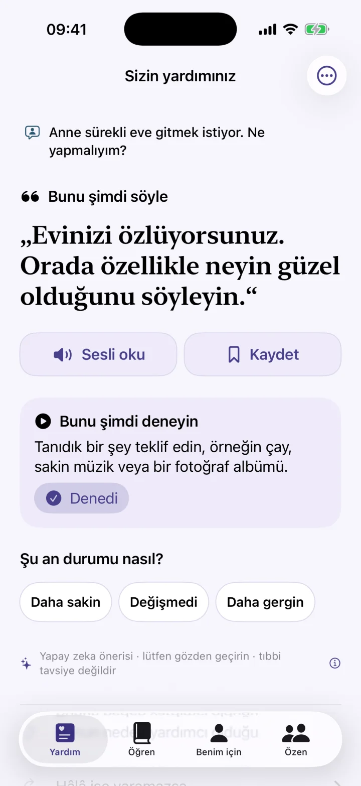
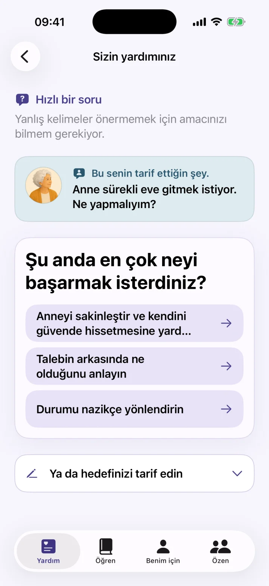
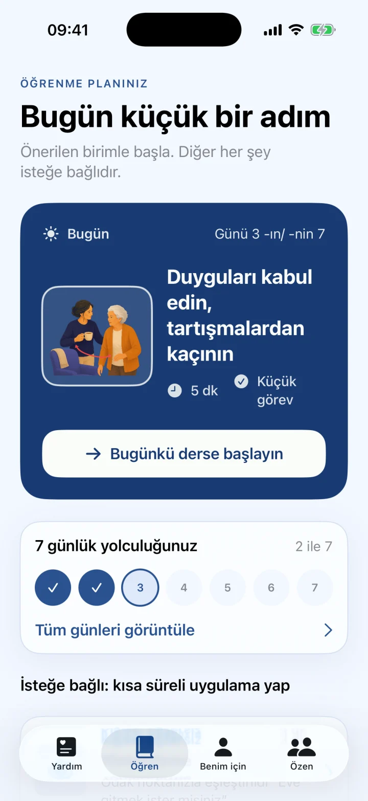
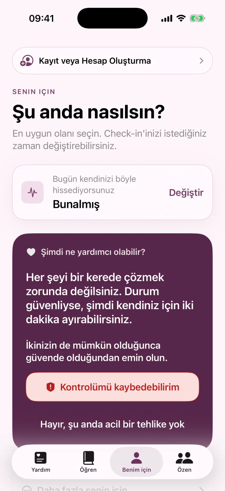

Kelimeler eksik olduğunda hızlı yardım.
Ne söyleyeceğinizi bilemediğinizde sakin bir cümle, küçük bir sonraki adım ve zorlu demans anları için açık bir yönlendirme alın.
- Tıbbi tavsiye veya yerel acil servislerin yerine geçmez.

Acil yardım
Öğren
Öz bakım
Zor bunama anları için hızlı yardım ve kişisel 7 günlük plan.
Ne söyleyeceğinizi bilemediğinizde sakin bir cümle, küçük bir sonraki adım ve zorlu demans anları için açık bir yönlendirme alın.



Cümleler ve sonraki adımlar
Dementia Coach, demansla yaşayan bir kişiye bakım veren aile üyelerini destekler. Durumu kısaca anlatın; değerlendirmeniz için sakin bir cümle, küçük bir sonraki adım ve açık bir açıklama alın.
- Stresli durumlar için hızlı yardım
- Tekrarlanan sorular, akşam huzursuzluğu veya kişisel bakım gibi yaygın anlar
- Kısa dersler ve kişisel 7 günlük plan
- Kaydedilen cümleler, sesli giriş ve sesli okuma
- Bakım veren için kısa bir durum kontrolü
Tıbbi tavsiye veya yerel acil servislerin yerine geçmez.
Dementia Coach iletişim ve günlük destek aracıdır. Tanı koymaz; tıbbi, hemşirelik, psikolojik veya acil yardımın yerini almaz. AI tarafından oluşturulan öneriler ve hazırlanmış içerik eksik veya uygunsuz olabilir. Bunları her zaman kişiye, duruma ve profesyonel yönlendirmeye göre değerlendirin.
Cümleler ve sonraki adımlar
Demanslı kişilerin aile bakıcıları için iletişim desteği.